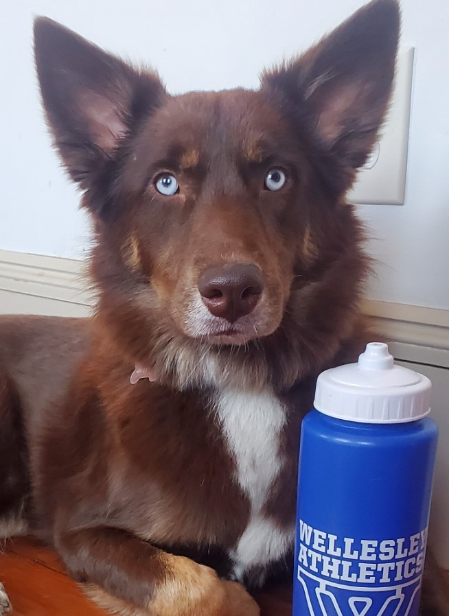

Integer tincidunt velit eget felis dignissim, vel fermentum nisi tempor. Aliquam porta quis arcu nec dictum.
Pellentesque lobortis ligula urna, tincidunt posuere tellus molestie sit amet. Integer pulvinar felis in
arcu laoreet mollis. Quisque accumsan volutpat porta. Phasellus fringilla eros id nibh imperdiet, in viverra
nisi vulputate. Nam luctus purus tristique ante gravida laoreet. Donec sapien libero, vulputate a sodales
vitae, venenatis sollicitudin leo. Nam at quam est.

Integer tincidunt velit eget felis dignissim...
Integer tincidunt velit eget felis dignissim, vel fermentum nisi tempor. Aliquam porta quis arcu nec
dictum. Pellentesque lobortis ligula urna, tincidunt posuere tellus molestie sit amet.
18
703
120
Rillow Monster @rillowpup · May 12
Integer tincidunt velit eget felis dignissim, vel fermentum nisi tempor. Aliquam porta quis arcu nec dictum.
Pellentesque lobortis ligula urna, tincidunt posuere tellus molestie sit amet. Integer pulvinar felis in
arcu laoreet mollis. Quisque accumsan volutpat porta. Phasellus fringilla eros id nibh imperdiet, in viverra
nisi vulputate. Nam luctus purus tristique ante gravida laoreet. Donec sapien libero, vulputate a sodales
vitae, venenatis sollicitudin leo. Nam at quam est.
Integer tincidunt velit eget felis dignissim...
Integer tincidunt velit eget felis dignissim, vel fermentum nisi tempor. Aliquam porta quis arcu nec
dictum. Pellentesque lobortis ligula urna, tincidunt posuere tellus molestie sit amet.